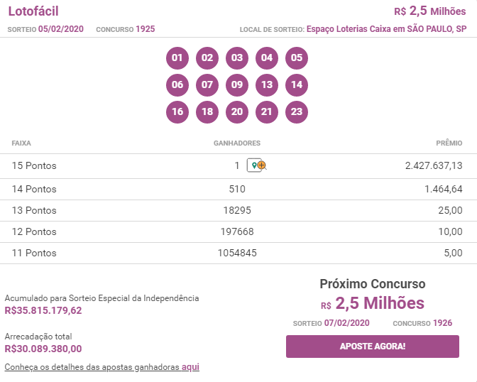
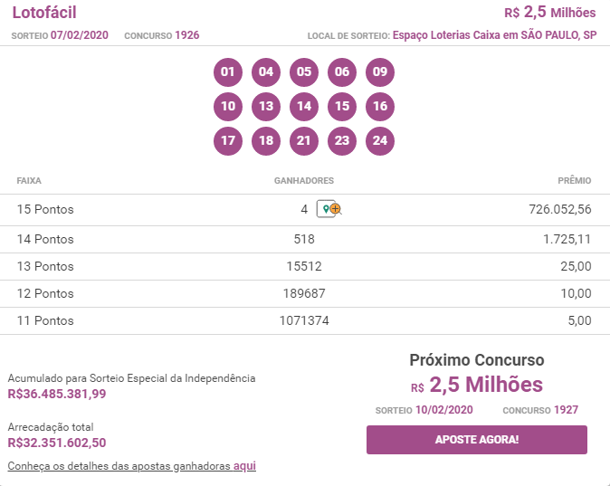

Como Lucrei R$6.705,48 nos últimos dois meses com sorteios da lotofácil sem precisar de SORTE e sequer SAIR de CASA
Abaixo, minha única foto que ”vazou” antes de ter que me esconder por conta dos ganhos na lotofácil..Agora, eu vou te mostrar como você pode alcançar resultados semelhantes (ou até melhores) a partir de uma única atitude tomada hoje, simples e rápida.
Caro leitor,
Meu nome é Guilherme Mendes. Sou motorista de aplicativo e trabalho atualmente com uber e 99.
E você não ouviu errado.
Quero deixar claro:
Se você também quer mudar de vida de alguma maneira pois já não agüenta mais como está vivendo, vou te mostrar como você pode buscar uma prosperidade INCRÍVEL e bem MELHOR do que tem hoje, investindo baixo em jogos da lotofácil.
Essa mudança simples e decisiva para a sua vida financeira pode ser feita em menos de 24 horas.
E sem a necessidade de depender única e exclusivamente da sorte.
Do mesmo jeito que eu fiz em um dos meus volantes, lucrando +85,63% no valor de cada
Parece estranho? Não se preocupe, logo você vai entender. E terá essa mesma chance também.
Até porque é bom deixar claro: o lucro de +85,63% foi alcançado por mim e pelos leitores que seguiram minha indicação.
Não surfei essa onda sozinho.
E hoje estou aqui para te ajudar a investir COMO OS MELHORES INVESTIDORES EM SORTEIOS do Brasil.
Tudo de forma simples e rápida.
É, na minha opinião, a forma mais inteligente de investir.
Nada mais que isso.
É como montar um time de futebol.
Mas em vez de você só poder contar com os jogadores do seu clube do coração, ou de seu país, você pode escolher qualquer jogador do mundo.
O ataque do seu time pode ter Messi pela direita, Cristiano Ronaldo pelo meio e Neymar pela esquerda.
Você pode fazer esse time começar a jogar a favor do seu dinheiro EM MENOS DE 24 HORAS.
Para melhorar radicalmente a sua realidade financeira.
Essa é a minha missão de vida:
Fazer com que cada vez mais pessoas possam investir de forma mais inteligente…
Fazer VOCÊ GANHAR DINHEIRO DE VERDADE não apenas com o seu trabalho, mas também com os seus investimentos.
Para chegar nisso, foi desenvolvida uma plataforma totalmente inovadora, que dá a qualquer pessoa a chance de obter o retorno dos melhores acertadores da forma mais...
… SIMPLES
… E RÁPIDA POSSÍVEL.
COM RISCOS CONTROLADOS.
É o que vou te mostrar neste texto
E, quando eu digo QUALQUER PESSOA, é qualquer pessoa MESMO!
Não importa o seu nível de estudos ou conhecimento de jogos/sorteios...
E tampouco se você é uma pessoa sortuda ou não ...
Em menos de 24 horas, você vai investir como os melhores acertadores profissionais do Brasil.
Com a chance de lucrar com a lotofácil sem precisar sequer sair de casa.
Quer saber como isso é possível?
Posso te explicar com uma história pessoal.
Eu ganhei +85,63% com meus volantes nos últimos dois meses sem nunca ter comprado uma cartela de sorteios na vida…
Sim, ganhei com lotofacil e nunca tinha arriscado.
Foi por meio de um sistema de aplicativo super inteligente de investimento que, nos últimos 2 meses eu lucrei exatos 6.705,48 Reais e eu provo com os comprovantes abaixo, veja:
E como eu fiz isso?
Não foi tão complexo, eu te explico.
Fiz 25 jogos investindo 50 Reais no total, somando os que eu ganhei voltou 100 reais para minha mão, desses 100 fiz 50 jogos porque mesmo sendo pouco, eu já animei, pelo menos não estava negativo e nem empatado, e consegui fazer 400 Reais, pra mim já era o máximo que eu poderia ter conseguido e foi ai que eu tirei os meus 100 e decidi continuar tentando, a final de contas, em time que ta ganhando não se mexe.
Peguei os 300 e fiz 150 jogos cara, seguindo o aplicativo inteligente que falei e ai nessa “ultima arriscada eu fiz 13 e 14 pontos
Então já deu um valor legal
Dessa parte eu vou pegar 70% do valor e continuar investindo 40% nas apostas para sempre ta batendo 14 pontos na semana
Não sei você, mas eu nunca pensei que tanta gente ganhava na Lotofácil, pra mim era tudo super difícil como na Megasena.
Mas dá uma olhada Jacqueline nestes prints que tirei de 2 resultados recentes da Lotofácil, olha a quantidade de gente que fez 14 pontos nestes dias:
Olha esse outro:
😯 518 pessoas no primeiro e mais de 500 no segundo print também. E isso não é incomum, acontece constantemente.
Nestes mesmos concursos eu e 2 amigos conseguimos acertar 13 cartelas com 14 pontos.
Ou seja, o nível de dificuldade pode ser considerado baixo.
Todos esses sorteios que eu citei são plenamente acessíveis.
Uns mais e outros menos.
Mas não adianta você ir lá agora e tentar acessar eles por conta própria...
Primeiro, porque essas pessoas já usam estratégias de lance alto, ou seja, colocam muito dinheiro. Nada garante que irão ganhar, mas quem coloca mais tem mais chances de ganhar e isso é claro pra todo mundo.
O problema principal é saber onde você deve colocar as suas fichas quais números escolher, como realizar seus jogos...
E, principalmente, saber balancear o número de volantes.
Deixa eu te explicar como isso funciona...
O Super Aplicativo é focado em sorteios da lotofácil.
Ou seja:
1 - Você nunca estará jogando as cegas e dependendo apenas de sua “intuição” ou sorte. NUNCA.
2 - Você deve saber equilibrar na quantidade de jogos, não precisa começar com 300 jogos, você viu a minha escalada até aqui. E...
3 - Você precisa conhecer as melhores estratégias do jogo, seus concorrentes estarão usando elas de maneira desleal contra você, se continuar aonde está, jogando sem entender o jogo.
Te mostrar isso é parte importante do processo que me levou a ganhar toda semana
Eu não sabia que já existiam milhares de pessoas que simplesmente já saíam na frente por não escolher números aleatórios e tentar no jogo
Agora pense em você aproveitando a oportunidade de pegar o sistema do Joaquim e colocar em prática o método dele junto ao Super App.
A maioria das pessoas jogam no chute e já acertam, você teria uma vantagem absurda usando o sistema automático a seu favor. 😎
É isso que me permite ter altos ganhos de resultados toda semana e também a alguns amigos que já estão na mesma pegada a idéia agora é multiplicar aqueles 50 inicial em 100x mil, rsrs
É essa qualidade de informação que me fez ter vontade de comprar a assinatura vitalícia do aplicativo e eu vou te falar, eu não largo nunca mais.
Dê uma olhada nos testemunhos a seguir.
São todos de pessoas reais, como você e eu.
Todos mudaram sua vida financeira radicalmente com uma atitude simples.
Isso ainda parece distante da sua realidade?
Então deixa eu te contar uma história...
Quando eu comecei a postar no facebook sobre esse sistema, eu fiz isso só pra dar na cara do pessoal e vou te contar o porquê fiz isso…
Assim que conheci esse sistema que faz as chances de ganhar na lotofácil aumentarem de maneira expressiva, eu fiquei muito curioso e resolvi dar um voto de confiança e fui intensamente criticado por minha esposa aqui em casa, ela até me mandou um áudio enquanto eu trabalhava que me desestabilizou e me deixou com muito medo, mas eu não dei ouvidos e continuei… se não bastasse só ela, meus amigos riram de mim e me chamaram de burro falando que isso era golpe de internet, mas eu já estava decidido e até mesmo tranquilo, porque era só testar o sistema e ver se funcionava realmente como prometia e se n funcionasse era só pedir meu dinheiro de volta!
Inclusive, pesquisei bem sobre o sistema e o Joaquim Costa e como funcionava o pagamento e a devolução do dinheiro, não que eu fosse pedir, apenas para entender como funciona mesmo caso tivesse alguma necessidade. E essa empresa responsável pelo recebimento do pagamento é totalmente neutra e segura em relação ao dinheiro, se você solicitar o reembolso do valor pago, eles fazem na mesma hora, quando eu vi isso na época, eu não tive dúvidas que era seguro, que se precisasse pedir o dinheiro de volta, seria rápido e simples!
Então já faz um tempo que estou usando o sistema e tenho muita gratidão a Deus por não ter dado ouvido à minha esposa e amigos falando que eu era burro e que isso não funcionava, apenas foquei em testar o sistema e foi a melhor coisa q me aconteceu!!!
Olha... acima, você viu.. eu coloquei alguns comprovantes dos meus ganhos… E como se não bastassem as críticas antes de eu começar a ter resultados, o pessoal ainda me critica bastante, ainda mais por mostrar meus resultados com os comprovantes… mas eu não estou nem aí, isso é para esfregar na cara deles!
Mas a verdade nua e crua é que eu consegui chegar em um rendimento muito melhor do que a média dos brasileiros irão ganhar em uma vida inteira, sim, é verdade, veja isso.
Não te mostrei isso de início porque são valores altos e a gente tende a não acreditar muito, mas acredite, isso mudou a minha vida
Enfim, eu apenas indico esse sistema porque gostaria que mais pessoas tivessem essa grande oportunidade de mudar de vida assim como eu estou tendo.
Nesse momento você já deve ter percebido que estou realizado com este método, ganhando toda semana, certo? Sinto a necessidade de passar isso aos outros…
Agora, peço que você anote o que vou afirmar aqui.
Essa é, na minha opinião, a forma mais simples e rápida de você ter os resultados que sempre sonhou para a sua vida, ter as mesmas chances de acerto de quem joga alto e já esta ai a um bom tempo.
Não há sequer outra forma, a não ser que você alguns milhões para fazer isso.
Mas aí você teria de parar tudo o que está fazendo e se dedicar integralmente a estudar a lotofacil e investimentos...
E, mesmo que você se tornasse um verdadeiro conhecedor do assunto, ainda assim seria apenas um "jogador", não um time completo.
Eu prefiro ser o "treinador" e escalar um verdadeiro esquadrão, com as melhores soluções matemáticas que um super computador pode dar. A inteligência trabalhando pra mim ganhar dinheiro.
E agora pelo SEU dinheiro.
Porque você vai ter acesso a tudo isso em menos de 24 horas.
Veja só, não estou aqui te prometendo ganhos específicos.
O que vou fazer é te mostrar o melhor método de ganhos na lotofácil do Brasil, que vai utilizar a surpreendente solução de cálculos matemáticos complexos e dados inteligentes de um computador no que chamo de super aplicativo, utilizado por experts em jogos, fazendo a máquina INVESTIR POR VOCÊ.
Veja esse vídeo abaixo por dentro do sistema que chamamos de super aplicativo de ganhos expressivos, aumente a tela para enxergar melhor:
Com pouco dinheiro você pode ter a prosperidade de uma vida
E, mais do que isso, irá aprender tudo sobre o sistema com vídeos que até uma criança saberia fazer.
Grave isso:
VOCÊ IRÁ BUSCAR OS MAIORES GANHOS COM UMA SELEÇÃO COMPLETA GERADA DIRETAMENTE PELO SISTEMA INTELIGÊNTE DE GANHOS DO APLICATIVO…
... PARA VOCÊ TER OS MELHOR MÉTODO DO MERCADO TRABALHANDO PELO SEU DINHEIRO.
Você vai perceber como é simples, gerar e salvar os seus jogos para depois conferir os resultados, quanto mais passa o tempo, mais pessoas saem na sua frente utilizando este método que inclusive sofre muitas ameaças por partes interessadas em destruir esse novo modo de jogar
Essa proposta é totalmente inédita no Brasil.
Você dificilmente vai encontrar por aí alguém que pode, com essas planilhas mentirosas por ai, dizer com todas as letras que tem os mesmos resultados ou que ganha o tanto de dinheiro em potencial que o método de sistema inteligente usando o app pode te dar.
Muito menos um aplicativo que você carrega em sua mão e pode fazer tudo sem sair de casa que mostra EXATAMENTE quais números e variáveis jogar…
Como acertar com 25, 50 ou até 100 reais?
Você terá acesso a tudo isso dentro do Método.
Os Melhores experts em jogos do mundo, usam e recomenda.
Reforço: simplesmente NÃO EXISTE outra maneira de você investir de forma tão simples e rápida, com o mesmo nível de ganhos de um computador com sistemas de exatidão.
Mas agora você vai ter acesso ao mesmo método que me fez ganhar mais de 1 milhão de reais e deixar o trabalho duro que é ser motorista de aplicativo.
A maioria das pessoas nem sabe que esses existe e é acessível.
Quanto isso valeria pra você?
Mudar completamente o nível da sua vida financeira tendo acesso a este método...
Permitindo, assim, que os frutos lhe permita ganhos semanais, e uma qualidade de vida e o futuro financeiro da sua família
Atingindo o nível ótimo de ganhos da forma mais:
SIMPLES
E RÁPIDA POSSÍVEL...
Com riscos controlados?
Pois o método é estruturado para que todas as pessoas tenham os melhores resultados possíveis gerados pelo sistema.
Não importando o nível de conhecimento ou a experiência em sorteios e você não precisa sair de casa para gerar seus jogos e nem mesmo fazer, pois pode jogar online, como também é sugerido dentro da plataforma.
Os 100 primeiros que garantirem a licença anual do SUPER APLICATIVO vão ter DE GRAÇA…
Essa mesma licença, só que agora vitalícia, para a vida toda até quando o app estiver online e funcionando, você poderá estar tendo o acesso a tudo.
Basta ser rápido: os 100 primeiros que garantirem levam.
Se você não for um dos 100 primeiros, também não precisa ficar triste. Vai ter acesso restrito a 1 anos a licença do SUPER APLICATIVO e 1 ano é mais do que o que precisa para gerar lucros toda semana a partir de agora.
QUERO ACESSO AGORA >>Você ainda tem dúvida?
P. Se você já ganhou alguns milhões com a Loteria, porque vai ensinar o que sabe? Ninguém vende a galinha dos ovos de ouro!
Resposta: Esse é o velho pensamento pequeno do Brasileiro, e é por isso que até alguns que ganham vários milhões na Loteria voltam a ficar pobres.
Quando se ganha uma boa grana, é preciso investir em algo, não só no Banco, mas montar algo pra trabalhar com este dinheiro.
Eu não sou alguém que ganhou por acaso a loteria, eu usei um método que eu posso passar para as pessoas e elas fazerem o mesmo, então porque não ganhar dinheiro indicando isso também? pois eu confio 100%
É o mesmo que dizer que o Bill Gates ganhou muito dinheiro quando criou o windows e quando ele dá uma palestra ( que inclusive vale milhões ) dizer que não faz sentido ele ganhar dinheiro ensinando o que sabe.
Então não perca mais oportunidades pensando pequeno, existe sim muita gente que ganha Milhões, talvez Bilhões e continua ajudando os outros, e até ganhando por isso também.
P. Como posso ter certeza que o sistema funciona?
Resposta: Eles confiam tanto no Aplicativo que criei, o Lotofácil Dominada, que caso você não acerte 14 pontos ao errar 5 números, basta me enviar um único e-mail que devolverei 100% do seu dinheiro, sem perguntas.
P. Como vou receber acesso ao Aplicativo?
Resposta: Logo após o pagamento, você recebe automaticamente um e-mail com seus dados de acesso atualizado e instruções para usar corretamente.
P. Funciona no celular?
Resposta: Sim, funciona exclusivamente no celular, computador e tablet.
P. Posso utilizar o sistema para sempre?
Resposta: Sim, o sistema é vitalício para os 100 primeiros. Pode utilizar quantas vezes você quiser, sem limites e sem nenhuma restrição.
P. O pagamento é seguro?
Resposta: Sim, tanto o pagamento quanto a compra são seguros, pois os dados são criptografados. O pagamento é processado pela maior plataforma de produtos digitais do Brasil.
P - Se todos ficarem sabendo de tal fórmula, o valor da premiação vai cair bastante devido ao grande número de acertos?
Resposta: Fique tranquilo quanto a isso, pois mesmo com a técnica ainda existe milhares de possibilidades e 13 e 14 pontos sempre são muitos ganhadores.
Fora que percentualmente ainda são poucos que conhecem o método e colocam em prática, então ainda tem espaço pra milhares de pessoas fazerem o mesmo.
O que não dá é pra ficar de fora esperando um dia que estiver animado pra começar, como tudo nessa vida temos que tomar iniciativa e aproveitarmos o quanto antes quando algo incrível surge.
Tudo na vida é uma escolha, neste caso ou você escolhe fazer parte dos que ainda vão ganhar muito dinheiro com isso, ou simplesmente desisti antes de nem tentar, ficando assim aquela dúvida eterna se teria dado certo.
Aceite o meu desafio e pronto, já tira essa dúvida de sua vida.
Afinal de contas se não conseguir resultados, te devolvo seu dinheiro sem problemas.
Mas nem comece já pensando em devolução, e sim preocupado em seguir certinho o que ensino para ganhar.
P - O difícil é errar os 5 números, parece que no fim é tão difícil quanto tentar acertar 15.
Resposta: Tudo é questão de estratégia, e esta parte de um princípio bem simples, o que é mais fácil, acertar 5 números ou acertar 15 em 25 chances?
E quando você monta uma sequência de jogos, é muito mais fácil você ter um alvo de 5 números do que tentar 15, assim você vai precisar de muito menos tentativas para acertar.
Uma coisa é certeza, na hora de jogar ir chutando qualquer número, é sem dúvida alguma a pior estratégia.
P - Tá cheio de gente igual a você que diz que é garantido 14/15 pts, se fosse assim a Caixa Econômica Federal já tinha falido.
Resposta: Infelizmente poucos acreditam que é possível usar conceitos matemáticos para aumentar drasticamente suas chances. Por isso está longe de um dia a Caixa quebrar por conta disso.
Hoje já temos pessoas que vivem apenas disso, toda semana preparam seu arsenal de jogos e saem pra luta, mas ainda são poucos.
Não estou dizendo que todos vão acertar 15 pontos toda semana, mas as chances aumentam de forma assustadora, e 13 e 14 pontos se torna uma rotina.
P - E onde estão os resultados que você tem, porque não mostra todos eles para que eu possa acreditar.
Resposta: Hoje em dia quando alguém não quer acreditar em algo, não tem o que mude sua opinião.
Se eu mostrar um dos comprovantes que ganhei 15 pontos, vão continuar dizendo que é fake, montagem, copiou de outro, etc.
Como já sei bem que isso acontece, prefiro esclarecer como é necessário uma estratégia eficiente pra se jogar.
E além disso, criei o desafio que se em 30 dias você não fizer pelo menos 14 pontos, basta 1 email e devolvemos o valor que você investiu.
Assim eu não vou precisar ficar sempre mostrando meus resultados, o que desejo é ver os seus resultados e sua gratidão por eu ter compartilhado esta oportunidade de mudança em sua vida.
P - Acredito que só ganha aqueles que Deus escolheu ganhar.
Resposta: Como você sabe se pra você começar a ganhar Deus não colocou esta oportunidade em sua vida?
A oportunidade de fazer seus jogos de uma forma inteligente e objetiva, aumentando assim absurdamente suas chances de ganhar.
Você não conhece os caminhos que Deus coloca a sua frente para que você alcance grandes objetivos em sua vida, se você acredita nele, basta agarrar as oportunidades que aparecem.
Eu digo isso, porque acredito que a vida funciona assim, as oportunidades surgem e você escolhe pegar ou largar.
Neste caso não é uma escolha sem volta, porque se decidir que não funciona pra você, é só pegar seu dinheiro de volta, simples assim.
P - Eu já vi algumas pessoas nos comentários falando mal de você e da sua técnica, que você só quer vender, como saber se eles não tem razão?
Resposta: É super simples saber, basta observar que quem fala mal nunca testou. Isso é natural nos dias de hoje com as redes sociais, as pessoas atacam tudo e todos apenas porque vai contra o que eles acreditam.
Infelizmente no Brasil vivemos desconfiados de tudo, e temos algumas crenças que pra ganhar dinheiro tem que ser sempre muito difícil.
Então quando qualquer pessoa compartilha algo que pode te ajudar a ganhar dinheiro de uma forma simples e rápida, de imediato surgem várias pessoas que se consideram os reis da verdade e criticam sem conhecer ou testar.
Muitos deles nem viram o site onde você pode adquirir o sistema, se tivessem olhado com atenção teriam observado que trabalhamos com uma das maiores e mais seguras plataformas de pagamento no Brasil, e que caso você não queira mais o produto em 30 dias, basta pedir reembolso.
Simples assim, teste tranquilamente o método, se não trazer resultados basta um email e seu dinheiro é estornado.
E se isso acontecer, pode me esculhambar a vontade, afinal de contas você teria testado e comprovado que não funciona e teria este direito de me questionar.
-
Esse é o MÉTODO que eu considero necessário para você mudar sua vida financeira para sempre.
Pois então…
Quanto valeria pra você ter acesso a uma plataforma assim completa, com potencial para elevar seus ganhos financeiros semanalmente?
Tente imaginar quanto vale um método que te permite investir como os melhores, de forma muito simples e rápida.
Que pode te mostrar como é possível lucrar com a lotofácil sem depender de sorte e sequer sair de casa.
É difícil quantificar isso…
Mas eles fizeram de tudo para que esse conteúdo fosse o mais acessível possível, para não te deixar dúvidas.
Por isso, a licença do Super aplicativo de ganhos expressivos hoje vai custar R$ 147,00 e você pode parcelar em até 12x
Se preferir o pagamento no cartão, você recebe o acesso imediato no seu email cadastrado, caso pague via boleto bancário, tem a liberação de 1 a 3 dias úteis.
QUERO ACESSO AGORA >>É um preço totalmente simbólico, como você pode perceber.
Quando eu entrei foi a mesma coisa, eles não querem que haja qualquer obstáculo entre você e a sua nova fase de investidor.
Você vai ficar impressionado ao ver como é FÁCIL ter a chance de lucrar como os melhores semanalmente.
Mas e se não for aquilo que você esperava?
O Método não se tornou hoje o melhor do Brasil, fazendo promessas que não se confirmavam.
E a prova disso é a GARANTIA DE REEMBOLSO, que permite a todos 7 dias para experimentar o Aplicativo.
Além do incentivo na adesão, esta oferta assegura a devolução do dinheiro da licença no caso de cancelamento nos primeiros 7 dias.
Caso você compre sua licença do SUPER APLICATIVO decida que não funcionou para você, pode cancelar sua licença na mesma hora.
Por isso, não há risco nenhum pra você em ao menos conhecer nosso o método.
Apenas clique em qualquer botão nesta tela para começar.
E aí você pode se perguntar:
"Mas eu posso cancelar a minha licença mesmo depois de gerar meus jogos e olhar tudo por dentro do método, todos os vídeos e como funciona?".
Sim, pode.
Sem ressentimentos, sem criar qualquer dificuldade.
Eles possuem tanta confiança na qualidade deste método que aceitam o risco de você cancelar a licença em 7 dias.
E as mais de 2mil licenças provam que as pessoas querem continuar acompanhando cada nova publicação, cada acompanhamento.
Não se esqueça que o aplicativo pode sair do ar a qualquer momento e você acabar perdendo essa oportunidade de ganhos já essa semana
Isso porque a Caixa e alguns outros órgãos do governo tentam retirá-lo do ar por conta da vantagem indevida que quem tem a licença possui
Estarei ao seu lado para ajudar.
Portanto, não perca mais tempo.
Comece agora a construir um futuro tranquilo para você e sua família.
Estou seguro de que o seu bolso e o seu patrimônio vão te agradecer por isso.
É importante que você aja rápido, até para receber seu acesso vitalício da licença..
QUERO ACESSO AGORA >>